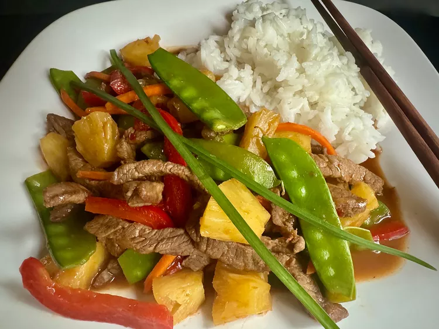

Beef and Pineapple Stir Fry

Description
This beef and pineapple stir fry, with its spicy sweet flavors and rainbow of colors, will tickle your tongue and please your eye.
Enjoy with rice or noodles.
Ingredients
-
1 pound beef top round or top sirloin, thinly sliced
-
1/4 cup cornstarch, divided
-
1 (14-ounce) can pineapple chunks in juice, drained, juice reserved
-
1/2 cup beef broth
-
1/2 cup soy sauce
-
2 tablespoons rice vinegar
-
2 tablespoons sambal oelek or Sriracha, or to taste
-
2 tablespoons vegetable oil
-
1 cup thinly sliced red onion
-
1 cup matchstick-cut carrots
-
7 ounces fresh snow peas, trimmed
-
1/2 large red bell pepper, thinly sliced
-
2 cloves garlic, minced
-
2 tablespoons grated ginger
-
fresh chopped chives for garnish (optional)
-
hot cooked rice (optional)
Steps
-
Combine beef strips and 2 tablespoons cornstarch in a bowl; toss until beef strips are evenly coated. Set aside.
-
To make sauce, stir 1/4 cup reserved pineapple juice, beef broth, soy sauce, rice vinegar, and sambal oelek or Sriracha together
in a bowl; set aside.
-
Heat oil in a large skillet or wok over medium-high heat. Add beef and onion to the hot oil, and cook, stirring quickly and
constantly, until beef is browned, about 5 minutes.
-
Stir in carrots, snow peas, and bell pepper; cook and stir about 1 minute. Add garlic and ginger and cook about 30 seconds. Stir
in reserved sauce and pineapple chunks.
-
Stir remaining cornstarch with 2 tablespoons water and add to the skillet. Cook, stirring constantly, until sauce is thickened, 1
to 2 minutes more.
-
Serve immediately with hot cooked rice, garnished with fresh chives, if desired.